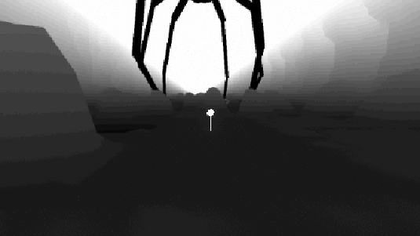

Praesent placerat magna
University Project A short, quirky sci-fi mystery about freedom, choice and loneliness. Contribution: FP-Controller, Technical Infrastructure, Interaction, Performance, Shaders. Credits: Me, Magnus, Macus, Martin, Nilas and Rickard.